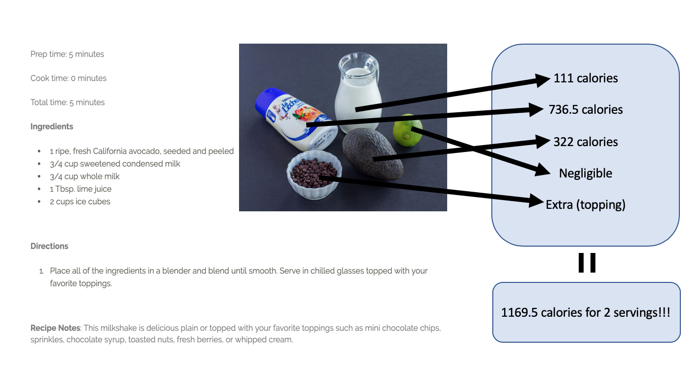

Milestone 1
Proposed Level of Achievement: Apollo 11
Motivation

Calorie counting is a chore. We often come across recipes which pique our interest but do not provide the nutritional information of the resulting dish. This might cause us to have second thoughts about giving it a go, especially if we have a dietary plan in mind. Sure, we could look up the nutritional information for each ingredient ourselves, but that gets tedious really quickly.
Let us do the counting so that you can do the eating!
User Stories
-
As one trying to lose weight, it is difficult to calorie count. do so without having to do up a spreadsheet or a notebook.
-
As one trying to lose weight, I want to know whether the food I'm about to eat will make me go above my daily caloric intake.
-
As one trying to lose weight, recipes frequently don't give caloric intake, plus other nutritional information. It is annoying to search up the calories of each ingredient and do the \text{math}.
Aim
We want to streamline the process of counting your calories through a well-designed website.
Scope
The core functionality of the website will be to allow users to input ingredients in specified amounts. The website will then output the total number of calories or calories per serving for that dish. Regarding the core functionality, some difficulties that we expect to encounter include:
- Pre-processing of nutritional information from public food databases
- UX design
- Handling user inputs (ingredients) that are not inside our own database
To complete by mid-June (Prototype)
- Input recipe's ingredients into the website and it will return the number of calories
- Database of common foods
- \frac{1}{2}\text{lb} chicken breast
- 100g beef
- 1\text{ cup} rice, etc
- Decent, functional UI
- User accounts with passwords (oAuth, Facebook, Google sign-ins)
- Graphs that track caloric intake over a given time period
In addition, we plan to implement SO MANY MORE features once the core functionality is finished. These include the features in the Extensions section of this README. The following are possibly some other features we can implement.
To complete by mid-July (Refinement)
- Sleek UI
- Saving recipes locally and to the Cloud
- User-recommended recipes
- Mobile notifications for users who are counting calories
How will it work?
Website: as expected, HTML5 and CSS
Database: SQL
Webapp: Main logic implemented using JavaScript
User Accounts: Handled using oAuth 2.0 through Google Firebase. This is not required to use the website, but is recommended to get more features that we plan to implement by the Refinement stage of the project. We will also use Facebook and Google user sign-ins.
Extensions
While we hope to make a website that is able to fulfill the aim above. We hope to extend the functionality of the app after the core idea has been implemented. So far, we wish to accommodate different use-cases, such as the following:
-
Different lifestyles such as those who to eat less and weight or to eat healthily, or to bulk.
-
Daily caloric goal (DCG) that is input by the user (suggestions can be given via a lifestyle questionnaire). The app should be able to inform the user whether their DCG has been overrun. The user should also be able to determine how many meals they want to eat in a day, how much they want to split calories between meals, what time they want to eat, etc. If they do not want to provide such information, our algorithm will automatically generate a mealplan for them within their specified DCG.
-
Recommendations on what food to eat for the next meal. For example, if the user has eaten too much meat in one meal, the program might give a recipe that has more vegetables or fruits in the next meal.
Project Log
Our project log is documented in this Google Sheet